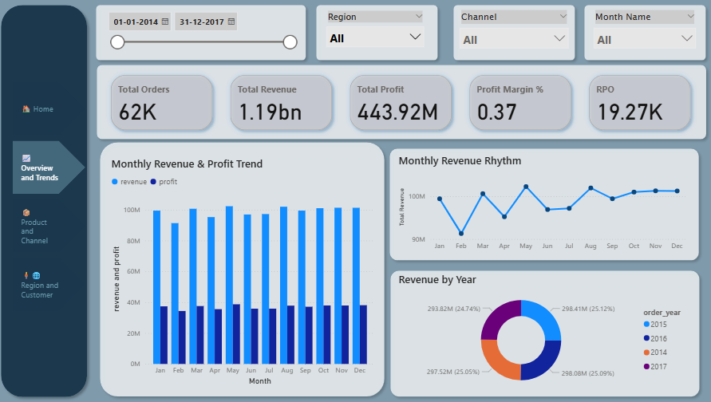
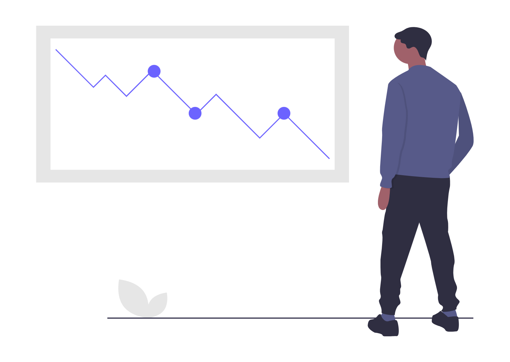

The End-to-End Sales Analytics Project covers the complete data analysis lifecycle,
transforming raw Excel data into actionable insights through Python and Power BI.
- Cleaning and transforming raw Excel sales files using Python (Pandas)
- Performing Exploratory Data Analysis (EDA) to uncover sales drivers and trends
- Building a Power BI dashboard covering Sales Overview, Customer Insights, Product Performance, and Regional Trends
This project demonstrates my ability to manage the full analytics pipeline — from raw data preparation to delivering interactive dashboards for decision-making.

The SQL Data Warehouse Project demonstrates building a complete warehouse solution using MySQL Workbench with a structured ETL workflow.
- Bronze Layer: Raw data ingested from ERP and CRM CSV files
- Silver Layer: Cleansing, handling nulls, removing duplicates, and normalization
- Gold Layer: Star Schema with fact & dimension tables for analytics
This highlights my ability to design data architecture, implement ETL pipelines, and structure large datasets for analytics and BI.

The SQL Data Analytics Project focuses on exploring and analyzing datasets using SQL queries to generate insights.
- Performed EDA directly in SQL
- Segmented customers, products, and regions
- Calculated KPIs like sales, revenue, contribution per segment
- Prepared results for visualization and reporting

The Customer Churn Prediction Project applies machine learning to forecast which customers are most likely to leave a service.
- Performed EDA to uncover churn patterns
- Feature engineering on demographics and usage data
- Built and evaluated multiple ML models
- Selected Random Forest for best performance
- Derived insights into key drivers of churn
More Projects on the Way...
I’m constantly working on new and better projects — stay tuned for updates!